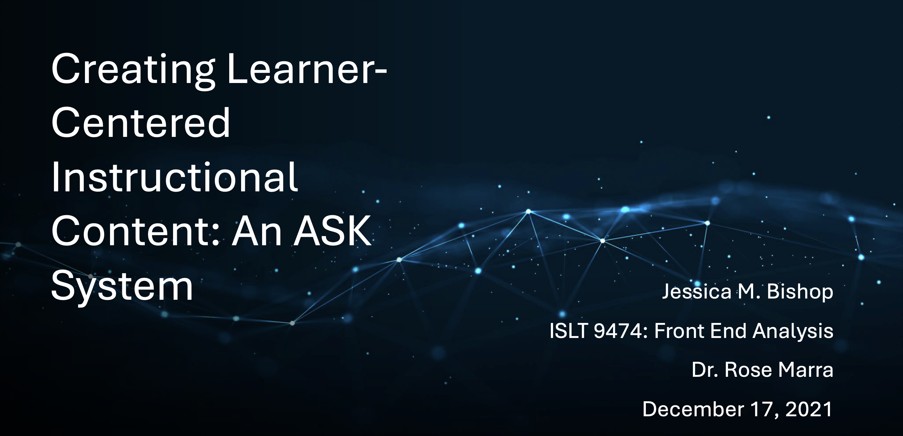
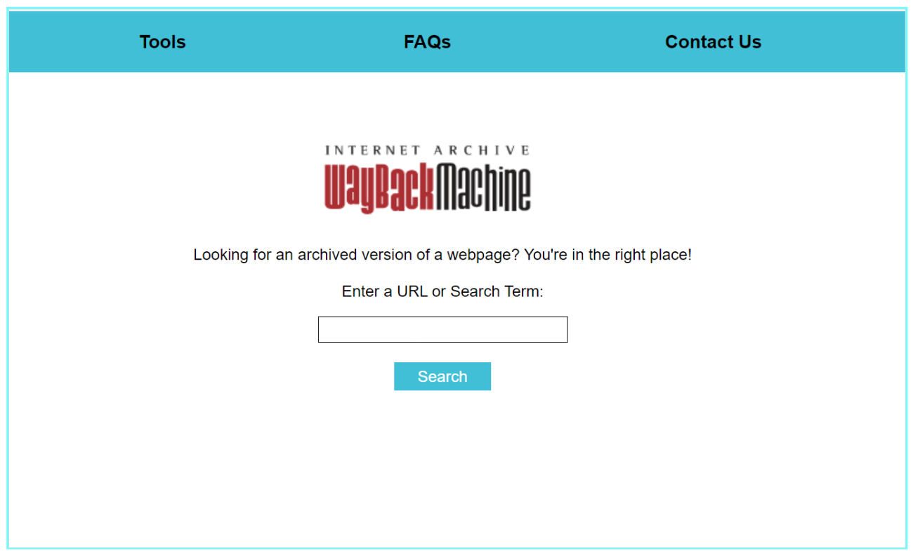
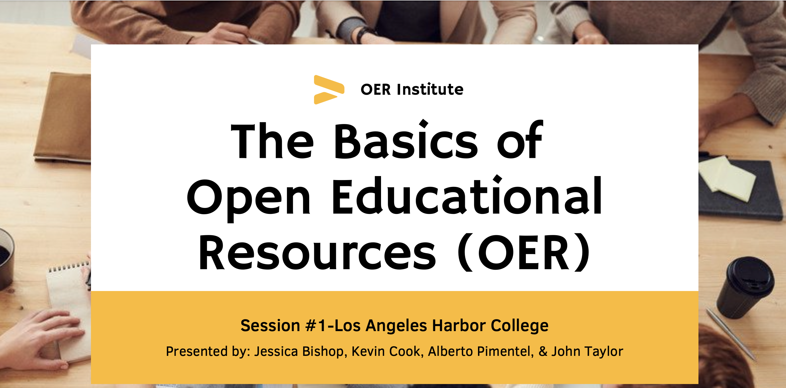

Projects
LTD Goals
The Learning Technologies and Design (LTD) program at the University of Missouri includes the following three competencies:
- Goal 1: Design and development of learning systems
- Goal 2: Front-end analysis and system evaluation
- Goal 3: Leadership & social responsibility
I aligned the program competencies with the following projects: Creating Learner-Centered Instructional Content: An ASK System, Wayback Machine Redesign, and OER Adoption Strategies for Adjunct and Full-time Faculty at Los Angeles Harbor College: Adding Quality OER into Courses.
  